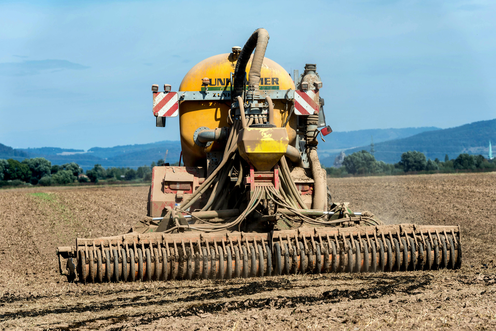
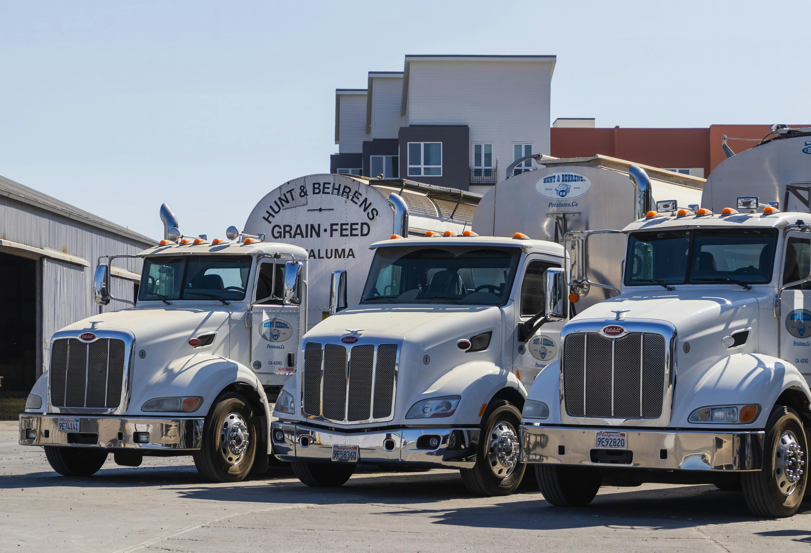

Products and Services
Agri Solutions offers sustainable farming solutions that enhance productivity and sustainability. Their advanced agricultural technology optimizes crop management, while focusing on soil health and fertilization ensures long-term soil vitality. Efficient supply chain management reduces waste, and their expert agri consulting provides tailored advice to help farmers achieve their sustainability goals.

Sustainable Farming Solutions

Agricutural Technology (Agri-Tech)

Crop Management

Soil Health and Fertilization

Supply Chain Mangement